◆「通古斯卡聖域Pick Up召喚」期間◆
期間:2021年12月22日(三) 17:00～12月31日(五) 11:59
從期間限定活動「非靈長生存圏 通古斯卡聖域」關聯從者之中2位新登場從者與3種期間限定概念禮裝Pick Up！
並且，今後追加到故事召喚的3種新登場概念禮裝先行登場！
※就算未滿足活動參加條件的狀態也能進行本召喚。
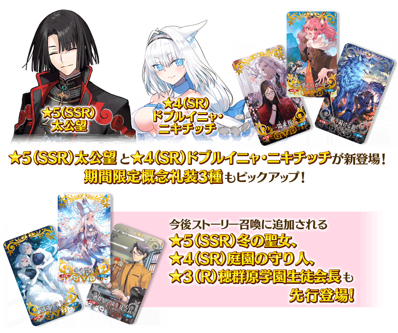
▼新登場從者
・★5(SSR)太公望
・★4(SR)多布雷尼亞・尼基季奇
▼期間限定概念禮裝
・★5(SSR)エンプティ・ガーデン
・★4(SR)一陽来復
・★3(R)眠り続ける街
裝備3種Pick Up對象期間限定概念禮裝的話，在期間限定活動「非靈長生存圏 通古斯卡聖域」的主線關卡及襲擊關卡中自身的攻擊威力與我方全體包含候補的絆點數獲得量會提升。
【注意】 ※由於在期間限定活動「非靈長生存圏 通古斯卡聖域」沒有自由關卡，期間限定概念禮裝的活動加成只會在本活動的主線關卡及襲擊關卡中發揮。請注意特別是襲擊結束後對象只限本活動的主線關卡。關於襲擊的舉辦時間表請在此確認。
Pick Up期間中，Pick Up對象從者與期間限定概念禮裝的出現機率提升！
並且，除了今後追加到故事召喚的3種概念禮裝先行登場外，翻新一部份★4(SR)與★3(R)概念禮裝的陣容！
▼新登場概念禮裝
・★5(SSR)冬の聖女
・★4(SR)庭園の守り人
・★3(R)穂群原学園生徒会長
上述3種新登場概念禮裝為本召喚的Pick Up對象外。
詳情請在聖晶石召喚畫面左下的召喚詳細確認。
11次召喚中確定1張★4(SR)以上和確定1位★3(R)以上的從者！ ※確定★4(SR)以上包含從者和概念禮裝。 ※本頁面皆為開發中圖片。會有與實際圖片相異的情況。
◆關於1天1次限定的有償聖晶石召喚◆
※可以1天1次限定於期間限定召喚用有償聖晶石1個進行「1回召喚」。
※透過有償聖晶石1個的「1次召喚」，每天3:00重置。
※透過有償聖晶石1個的「1次召喚」對應的聖晶石召喚有好幾個的情況，各個召喚中1天各進行1次有償聖晶石1個的「1次召喚」。
※請注意就算進行透過有償聖晶石1個的「1次召喚」，不包含在1次獎勵的計算。
※聖晶石購入時賦予的「附贈(オマケ)」是做為無償聖晶石而不包含在有償聖晶石的個數，請注意別搞錯。另外，持有聖晶石的細項，可從持有道具一覧確。
◆關於透過召喚獲得從者硬幣
在期間限定召喚、故事召喚、友情點數召喚中入手從者時，可獲得該從者的從者硬幣。
◆有關從者的注意◆
※下述的從者自Pick Up期間結束後的2021年12月31日(五) 12:00，追加到故事召喚。
・★5(SSR)太公望
・★4(SR)多布雷尼亞・尼基季奇
◆有關概念禮裝的注意◆
※下述的概念禮裝由於為Pick Up對象外，不會提升出現機率。
・★5(SSR)冬の聖女
・★4(SR)庭園の守り人
・★3(R)穂群原学園生徒会長
※請注意下述的概念禮裝在期間限定活動「非靈長生存圏 通古斯卡聖域」的主線關卡及襲擊關卡中，沒有自身的攻擊威力與我方全體包含候補的絆點數獲得量提升的效果。
・★5(SSR)冬の聖女
・★4(SR)庭園の守り人
・★3(R)穂群原学園生徒会長
※下述的概念禮裝自Pick Up期間結束後的2021年12月31日(五) 12:00，追加到故事召喚。
・★5(SSR)冬の聖女
・★4(SR)庭園の守り人
・★3(R)穂群原学園生徒会長
※隨著翻新，下述的概念禮裝於本召喚為召喚對象外。
・★4(SR)天の晩餐
・★3(R)黄金樹の系譜
※2021年12月31日(五) 12:00以後，下述的概念禮裝變得不會從故事召喚被抽出。
・★4(SR)天の晩餐
※就算2021年12月31日(五) 12:00以後，下述的概念禮裝也會自教學召喚被抽出。
・★4(SR)天の晩餐
※2021年12月31日(五) 12:00以後，下述的概念禮裝變得不會從故事召喚被抽出，追加至友情點數召喚。
・★3(R)黄金樹の系譜
※下述的概念禮裝，Pick Up期間中也能靠友情點數召喚獲得。
・★3(R)眠り続ける街
※在自動變還設定登錄★3(R)概念禮裝的情況，下述的概念禮裝會變成自動變還的對象。
・★3(R)眠り続ける街
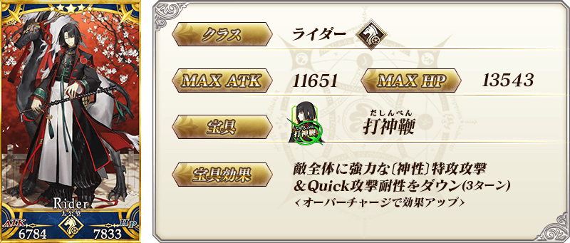 ※上述「★5(SSR)太公望」的卡面為靈基再臨第1階段。
 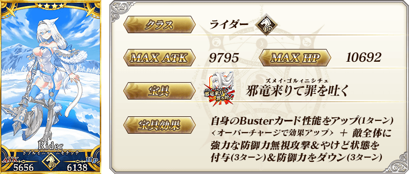
※上述「★4(SR)多布雷尼亞・尼基季奇」的卡面為靈基再臨第1階段。
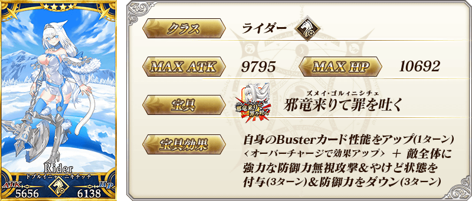
※上述「★4(SR)多布雷尼亞・尼基季奇」的卡面為靈基再臨第1階段。
| 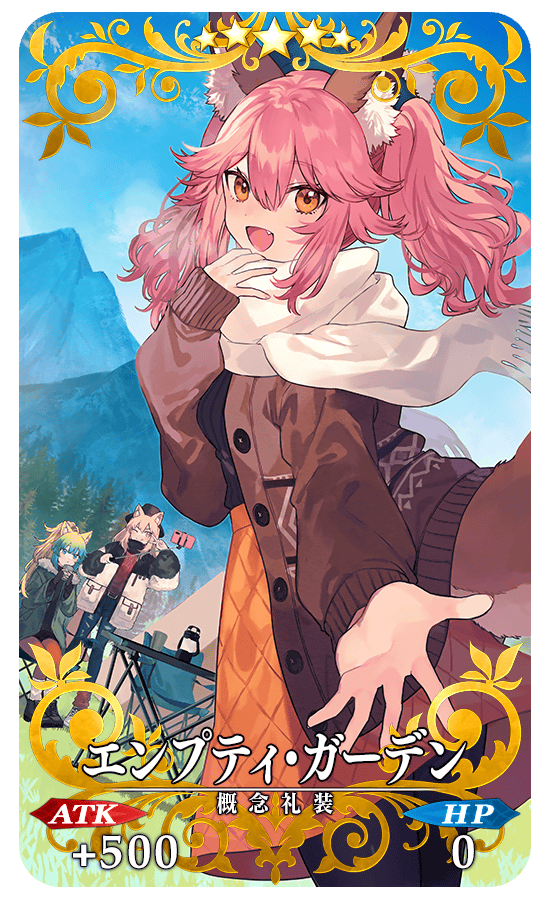 |
★★★★★SSR 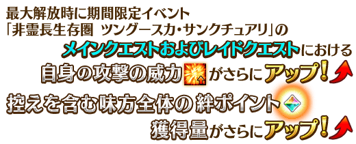 |
| 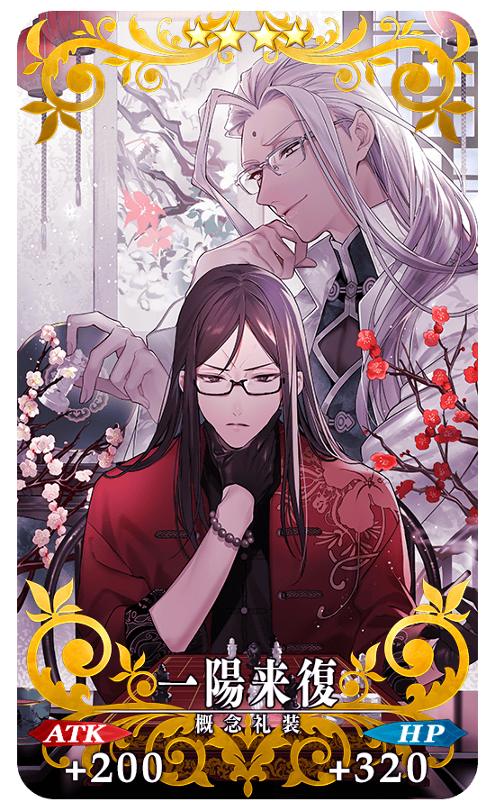 |
★★★★SR
|
| 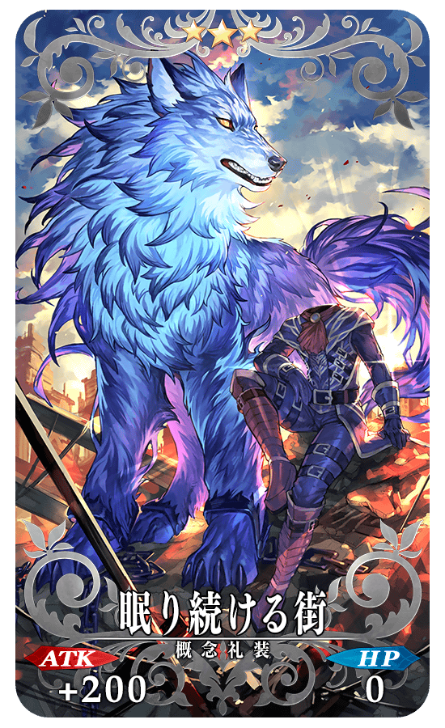 |
★★★R
|
| 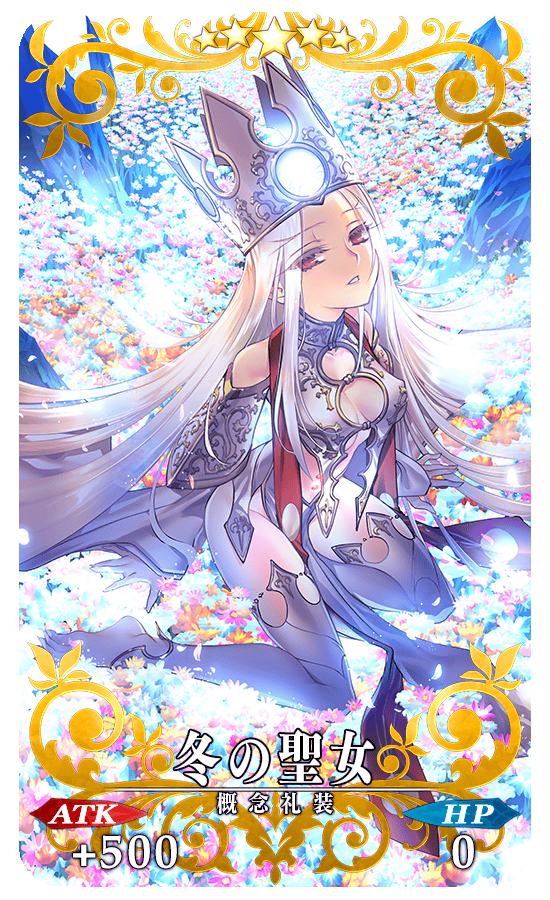 |
★★★★★SSR |
| 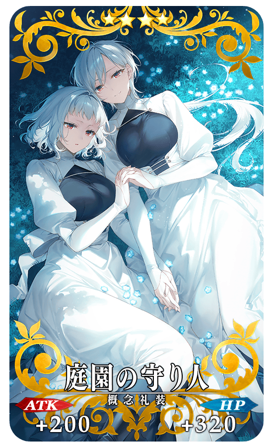 |
★★★★SR |
| 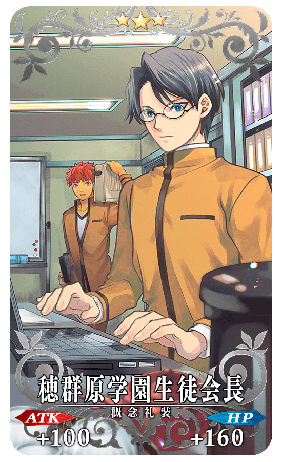 |
★★★R |

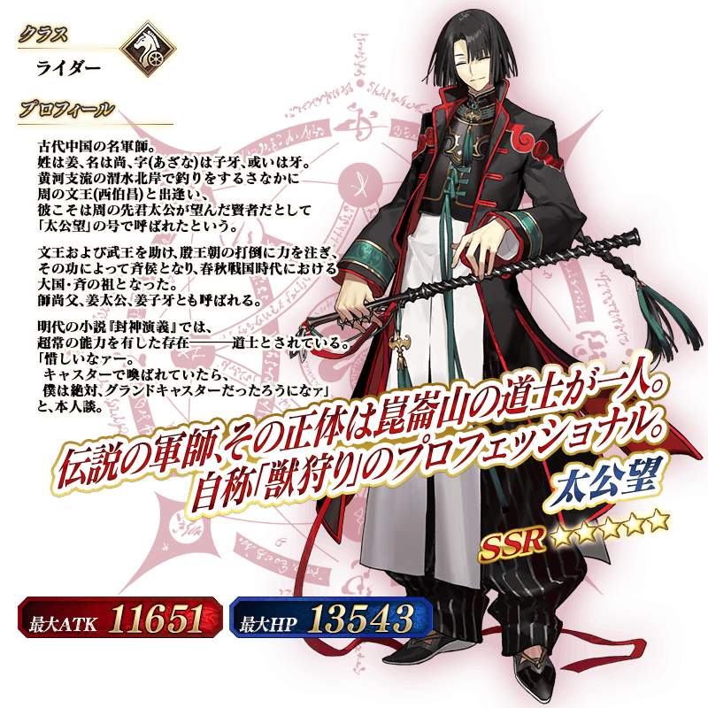 ※上述「★5(SSR)太公望」的立繪為靈基再臨第1階段。
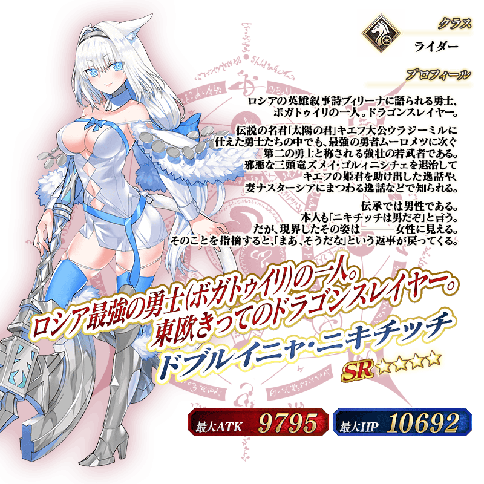 ※上述「★4(SR)多布雷尼亞・尼基季奇」的立繪為靈基再臨第1階段。
介紹在本召喚Pick Up的2位從者寶具演出！
2位Pick Up從者的寶具演出於一部份裝置有對應全螢幕顯示。
【★5(SSR)太公望】
【★4(SR)多布雷尼亞・尼基季奇】
其他還有，期間限定活動「非靈長生存圏 通古斯卡聖域」舉辦！
關於詳情，請自下述橫幅確認。
■「非靈長生存圏 通古斯卡聖域」詳細情報